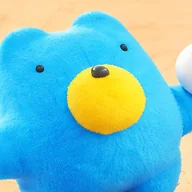
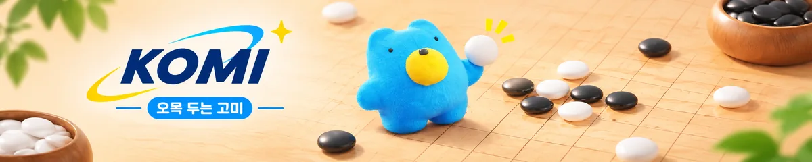

KOMI
오목 두는 고미
분석 열기
카카오톡 인앱 브라우저에서 고미가 느리게 열려요.
다른 브라우저로 열기
✕
고미를 깨우는 중… (약 90MB, 처음 한 번)
고미
백
나
흑
후보
수순
새 게임
무르기
분석

새 게임
고미와 대국 · 내가 흑 (선공)
고미와 대국 · 내가 백 (후공)
온라인 대국 도우미
다른 사이트의 실제 대국 수를 입력하면 다음 수를 추천해요
내가 흑
내가 백
닫기
대국 종료
한 판 더
판 보기
설정
고미 생각 시간
빠름 0.5초
보통 2초
강함 6초
분석
후보·승률 계산
두 번 탭해서 두기
잘못 누름 방지
효과음
이기고 질 때 소리
렌주 규칙
흑은 3-3, 4-4, 6목 이상 금지(✕ 표시), 정확히 5목이면 승리. 백은 5목 이상이면 승리.
엔진 정보
고미의 엔진은 자체 개발한 B1(직선 패턴 신경망 + 몬테카를로 트리 탐색)입니다. 쉽게 말해 고미는 오목판의 가로·세로·대각선 줄 모양을 보고 "여기가 좋겠다"를 먼저 떠올린 뒤, 그다음 수들을 수천 번 미리 둬 보면서 가장 좋은 자리를 골라요. 이 모든 생각은 인터넷 서버가 아니라 지금 쓰는 폰이나 컴퓨터 안에서만 이뤄져요. 내가 둔 수는 어디로도 보내지 않아요.
고미 가중치 공개
고미의 두뇌인 신경망 가중치를 GitHub에 공개했어요. 출처를 밝히면 비상업적 용도로 자유롭게 쓸 수 있어요(CC BY-NC 4.0). 내려받는 법과 사용법은
GitHub 저장소
에 있어요.
KOMI v1.0.0 · 엔진 B1
닫기